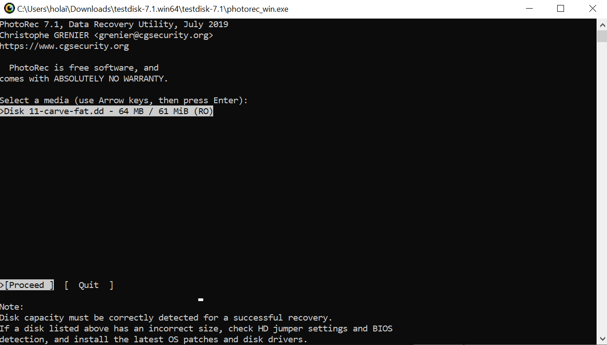
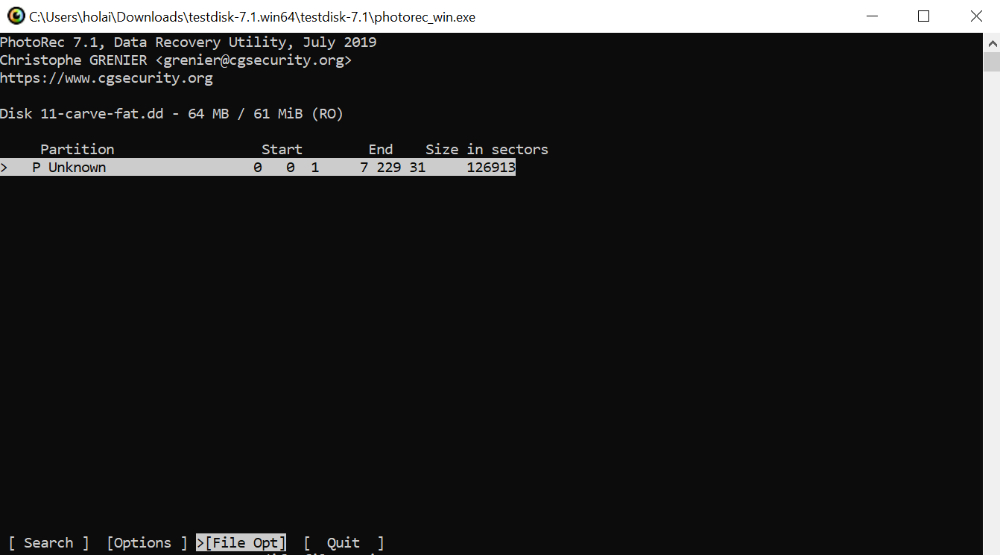
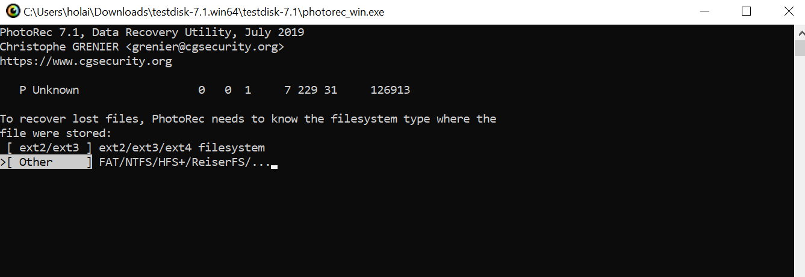
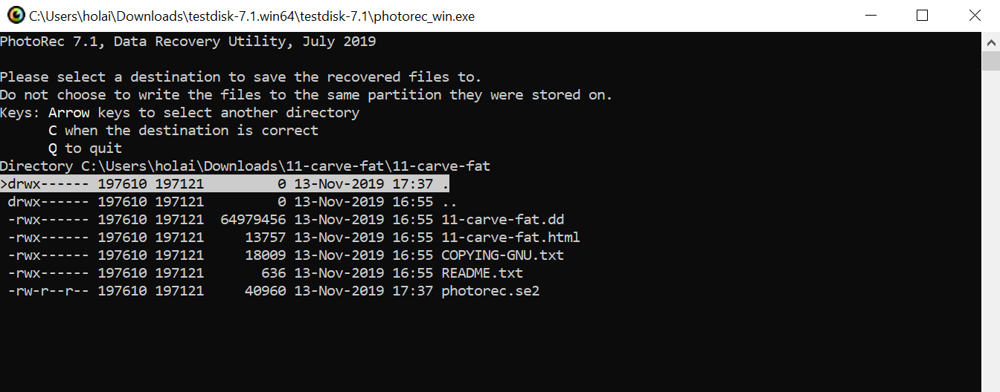
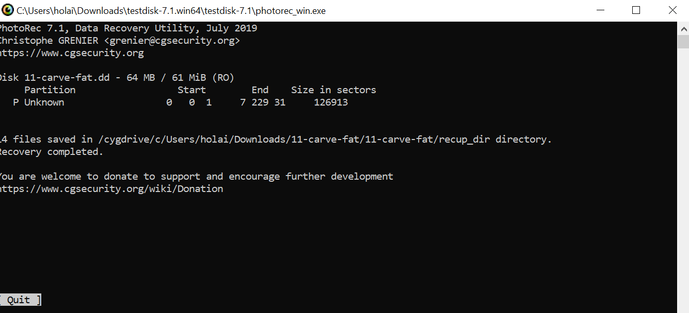

Have you ever wondered how forensic analysts are able to recover deleted files on your computer?
Or simply deleted a file by accident and emptied the Recycle Bin, then cursed at yourself but still couldn't figure out how to get it back?
In this demo, we will be showing you how to perform basic file recovery, which is a branch of digital forensics, with the help of PhotoRec.
Not only can this tool recover lost pictures from digital camera memory, but it can also recover lost files of more than 480 formats, which include zip, txt, pdf and html, from a wide range of media, such as hard disks, CD-ROMs, USB memory drives and dd raw images.
Step 1: Run the command photorec_win.exe [disk_image_name].
Ensure that Desktop is the current working directory.Step 2: Select the disk image.
Step 3: Select the source partition.
Step 4: Select the file system type.
Step 5: Select a destination to save the recovered files to.
Once the files have been recovered, you will see the following screen.
Congratulations! You've recovered the deleted files successfully.